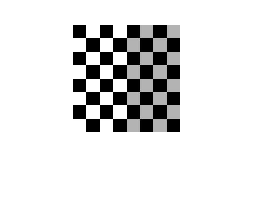
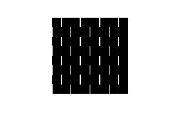
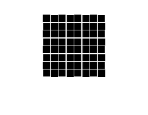

% This command is used to create a checkerboard image % The 20 within the command represents the number of % pixels that each box on the checkerboard will represent imshow(checkerboard(20)); % Create an image from this matrix % We must state the image we want to use % Then the name we want it to have % And finally the format we want it to be in imwrite(checkerboard(20), 'checkerboard.jpg', 'JPEG'); % To verify this command worked we will read the image % Then display it myImage = imread('checkerboard.jpg'); imshow(myImage); % Create the x and y gradient filters to begin the % edge detection algorithm Sx = [1 0 -1; 2 0 -2; 1 0 -1]; Sy = [1 2 1; 0 0 0; -1 -2 -1]; % Convolve each of the above filters with the checkerboard image % First we must convert the image into a double by using the 'double' % command and passing it the image variable name 'myImage' sobelXImage = conv2(double(myImage), Sx, 'same'); sobelYImage = conv2(double(myImage), Sy, 'same'); % Next we will display the images so we can see how they currently % are looking with the filters applied figure('Name', 'X Gradient'); imshow(uint8(sobelXImage)); figure('Name','Y Gradient'); imshow(uint8(sobelYImage)); % Do the gradient images look like you expect them to? Why or why not? % No they do not appear as expected because they are just lines going % vertically on the X Gradient and lines going horizontally on the Y % Gradient. I had expected the images to appear as a gradient where % the colors all flow together between the light and dark colors of the % image % What is missing from the above question and how would you fix it? % I believe what is missing is that the gradient magnitude is not being % calculated because we are not combining the results of the gradient % components. It can be fixed by calculating the gradient magnitude. This % is done by taking the square root of the sum of the squared x and y % gradients. % The command we will use to complete this operation is displayed below E = sqrt(sobelXImage.^2 + sobelYImage.^2); imshow(uint8(E));  